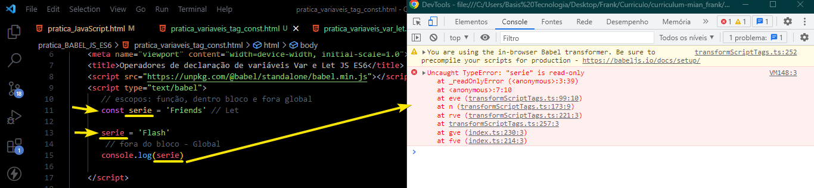

Operadores de declaração de variáveis Tag Const
const = variaveis então chama const serie:Friends e outra serie = variaveis então chama serie: Flash.
então resultado é const primeiro e não é serie do variaveis.

const serie: Friends é escopo global e outra escopo dentro função const serie:Flash
então resultado...